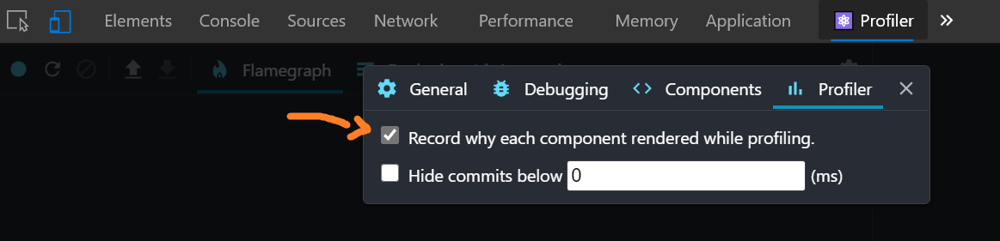
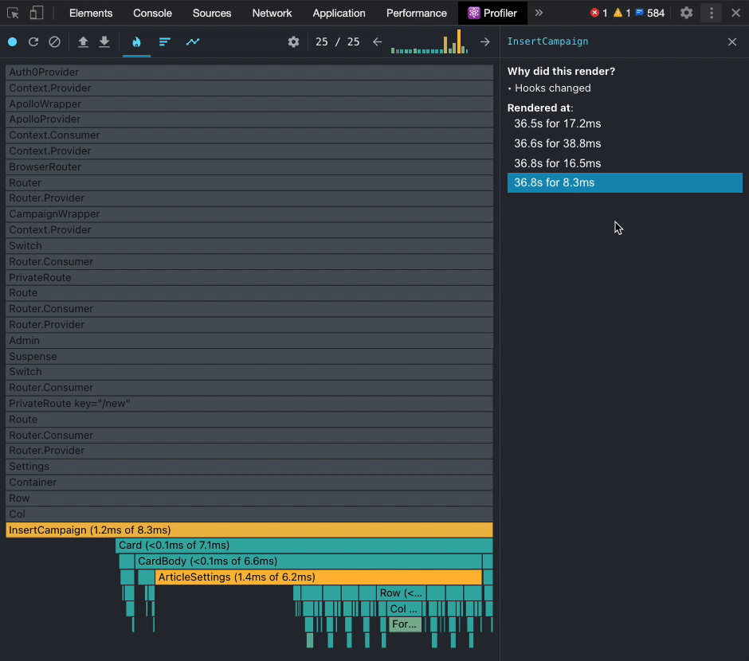

Trace why a React component is re-rendering
Is there a systematic approach to debug what is causing a component to re- render in React? I put a simple console.log() to see how many time it renders, but am having trouble figuring out what is causing the component to render multiple times i.e (4 times) in my case. Is there a tool that exists that shows a timeline and/or all components tree renders and order?
Answer
You can check the reason for a component's (re)render with the React Devtools profiler tool. No changing of code necessary. See the react team's blog post Introducing the React Profiler.
First, go to settings cog > profiler, and select "Record why each component rendered"


Suggest
You can check the reason for a component's (re)render with the React Devtools profiler tool. No changing of code necessary. See the react team's blog post Introducing the React Profiler.
First, go to settings cog > profiler, and select "Record why each component rendered"